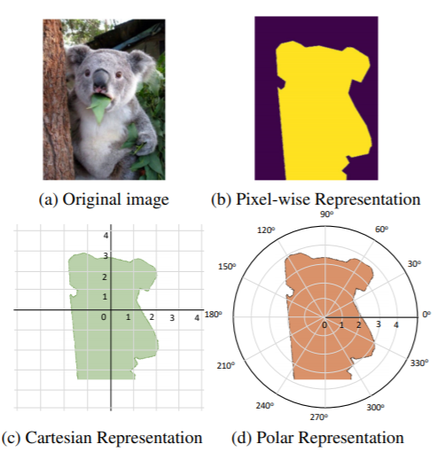
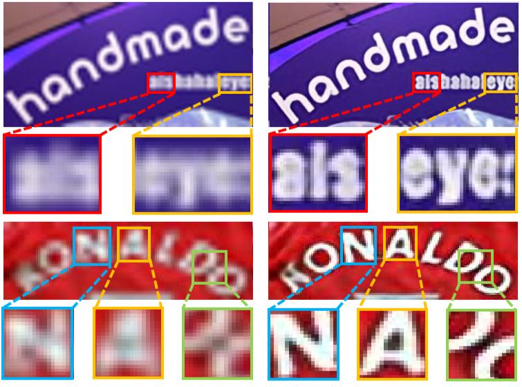

Peize Sun (孙培泽)
CV / GitHub / Google Scholar / peizesun AT gmail DOT com
I am currently a research intern at Megvii(Face++), a Chinese start-up company of computer vision. I focus on improving the object detection and its applications, mentored by Boxun Li and Dr. Gang Yu.
I am a master student in Electrical Engineering Department, Xi'an Jiaotong University, advised by Prof. Xiaohua Wang. During my graduate study, I visited UC Berkeley and worked with Ke Li, advised by Prof. Jitendra Malik. I obtained my bachelor degrees from Electrical Engineering Department, Xi'an Jiaotong University.
Publications and Manuscripts
(* indicates equal contribution)

Tech report, arXiv:1909.13226 [arXiv]
PolarMask: Single Shot Instance Segmentation with Polar Representation
Enze Xie*, Peize Sun*, Xiaoge Song*, Wenhai Wang, Xuebo Liu, Ding Liang, Chunhua Shen, Ping LuoTech report, arXiv:1909.13226 [arXiv]

Double Anchor R-CNN for Human Detection in a Crowd
Kevin Zhang*, Feng Xiong*, Peize Sun, Li Hu, Boxun Li, Gang YuTech report, arXiv:1909.09998 [arXiv]

Tech report, arXiv:1909.07113 [arXiv]
TextSR: Content-Aware Text Super-Resolution Guided by Recognition
Wenjia Wang*, Enze Xie*, Peize Sun, Wenhai Wang, Lixun Tian, Chunhua Shen, Ping LuoTech report, arXiv:1909.07113 [arXiv]


Development of Cloud Service Platform for Live Detection System of Switchgear
Peize Sun, Xiaonan Wang, Kang Yang, Xiaohua Wang, Mingzhe RongChinese Conference of Electrical Appliance Intelligent System 2017 [Paper]
Patents
Awards
| Chiang Chen Enterprise Scholarship (top 2%) | 2018,2017 |
| National Scholarship (top 1%) | 2016 |
| National Endeavor Scholarship (top 1%) | 2015,2014 |
| 1st Place in Robust Reading Challenge on Arbitrary-Shaped Text of ICDAR | 2019 |
| 2rd Prize, “TI Cup” Electronic Design Contest of Shaanxi | 2016 |
| 2rd Prize, National Contest on Energy Saving & Emission Reduction | 2016 |
| 1st Prize (Meritorious Winner), Interdisciplinary Contest in Modeling of America | 2016 |
modified from © Yangqing Jia 2013